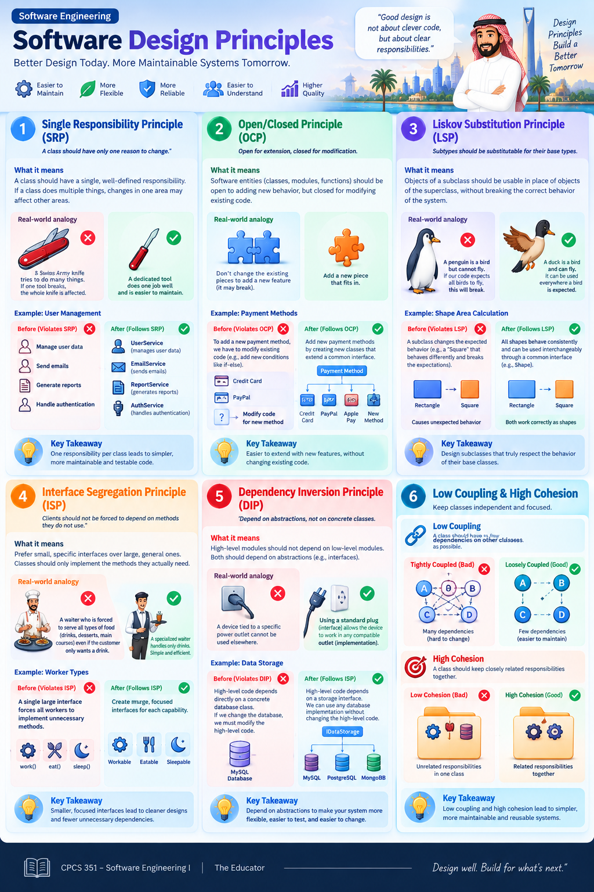
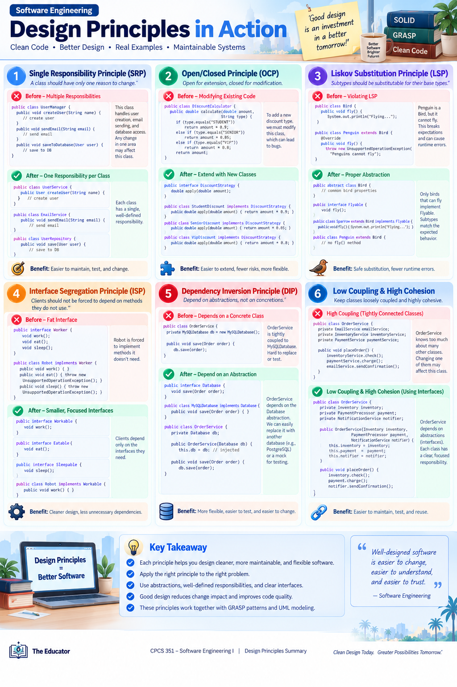

08 · SOFTWARE DESIGN PRINCIPLES
Design Principles
Use these two visual summaries as a compact bridge between GoF patterns and GRASP responsibility assignment. The goal is not to memorize slogans, but to recognize what makes a design easier to change, understand, and maintain.
Recognize the design smellLook for mixed responsibilities, rigid extension points, unsafe inheritance, oversized interfaces, and excessive dependencies.
Choose a design directionUse SRP, OCP, LSP, ISP, DIP, Low Coupling, and High Cohesion to evaluate alternatives.
Assign responsibilityThen use GRASP to decide which object should receive, know, coordinate, or create.


Design Principles → GRASP
Principles evaluate qualityIs the design cohesive? Is coupling controlled? Are responsibilities focused and dependencies stable?
GRASP assigns responsibilityController: who receives the system event? Information Expert: who has the knowledge? Creator: who should create the object?
Key connection: Design Principles tell you what a good design should achieve; GRASP helps you decide where responsibilities should go to achieve it. The next lessons apply this reasoning directly to sequence diagrams.